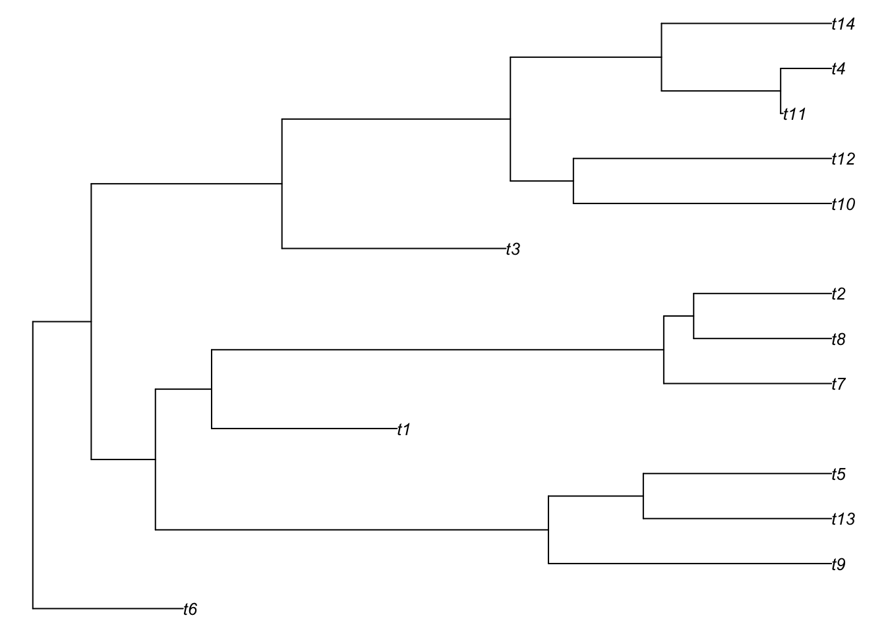
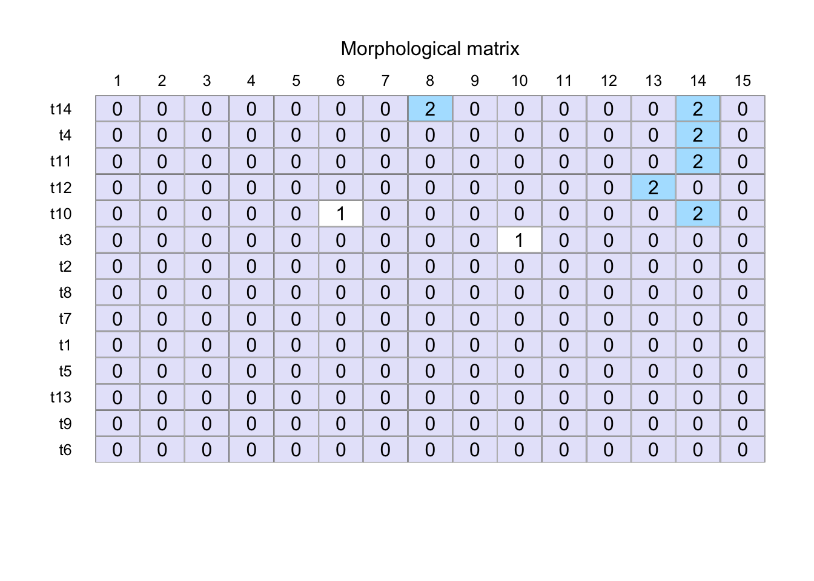
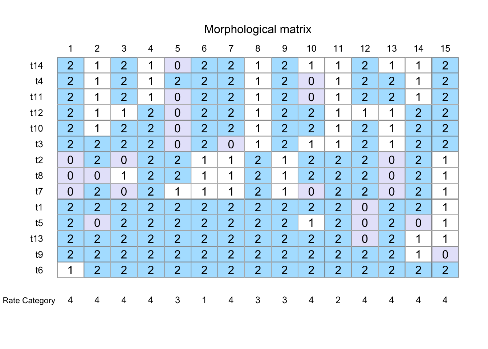
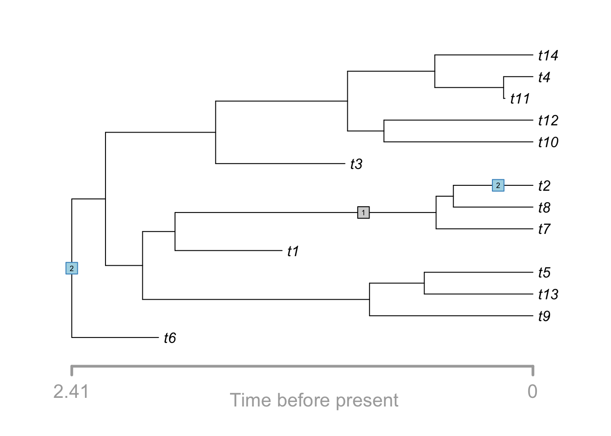

library(TreeSim)Loading required package: apeLoading required package: geigerLoading required package: phytoolsLoading required package: mapslibrary(ape)
set.seed(12)Before we can simulate morphological data we need a phylogenetic tree along which to simulate our data. In R, trees can be simulated using a number of different packages, most commonly ape and TreeSim. Here we explain how to generate a birth-death time tree using TreeSim.
TreeSim (Stadler 2011) simulates trees under a constant-rate birth-death process, where new lineages are added at rate lambda (speciation) and removed at rate mu (extinction). The function we’ll use, sim.bd.taxa(), simulates a tree conditioned on reaching a fixed number of extant tips.
TreeSim provides several related functions depending on what you want to condition the simulation on:
| Function | Conditions on |
|---|---|
sim.bd.taxa() |
number of tips |
sim.bd.age() |
tree age (time since root) |
sim.bd.taxa.age() |
both age and tip number |
sim.rateshift.taxa() |
number of tips, with rate shifts / mass extinctions over time |
sim.gsa.taxa() |
number of tips, sampled from a larger pool of simulated trees |
We’ll focus on sim.bd.taxa() since it’s the simplest entry point, but it’s worth knowing the others exist if your own data calls for a different kind of tree.
For reproducibility, we set a random seed before simulating: since the birth-death process is stochastic, this ensures the tree (and everything downstream) is identical every time this document is rendered.
library(TreeSim)Loading required package: apeLoading required package: geigerLoading required package: phytoolsLoading required package: mapslibrary(ape)
set.seed(12)We simulate a single tree with 10 tips, a speciation rate of 1 and an extinction rate of 0.5. Note that mu must be less than lambda; if extinction is too close to (or exceeds) speciation, the process may need many attempts to reach the target number of tips, and simulation will be slow or may not converge in reasonable time.
tree_list <- sim.bd.taxa(
n = 10, # number of extant tips
numbsim = 1, # number of trees to simulate
lambda = 1, # speciation rate
mu = 0.5, # extinction rate
complete = TRUE # drop extinct/non-sampled lineages; keep only extant tips
)
tree <- tree_list[[1]]Note that sim.bd.taxa() always returns a list of trees, with length equal to numbsim. Even when simulating a single tree, we still need to index into the list ([[1]]) to extract the phylo object itself. This trips a lot of people up the first time, so it’s worth calling out explicitly.
We set complete = TRUE so we want the whole tree, including lineages that went extinct before the present, rather than one pruned down to extant taxa only. It’s important to understand what n controls here: sim.bd.taxa() only lets you specify the number of extant tips, not the total number of tips in the tree. So with n = 10 and complete = TRUE, the simulation keeps adding and removing lineages until it reaches exactly 10 tips at the present, but every lineage that went extinct along the way is also retained in the output. That means the final tree will generally have more than 10 tips in total once extinct lineages are counted. If you instead want a tree with exactly 10 tips and no fossils at all, set complete = FALSE, which drops the extinct lineages and returns only the extant-tip tree.
Before moving on to simulating morphology, it’s good practice to confirm the tree looks the way we expect. A few quick checks:
# total tip count, including BOTH extant and fossil lineages
# (this will be > 10, since n only controls extant tips)
Ntip(tree)[1] 14# this is the check that actually confirms n = 10 was enforced:
# count tips whose distance from the root equals the tree's max depth
# (i.e. tips sampled at the present)
node_depths <- node.depth.edgelength(tree)
tip_depths <- node_depths[1:Ntip(tree)]
sum(abs(tip_depths - max(tip_depths)) < 1e-8)[1] 10# with complete = TRUE, the tree should generally NOT be ultrametric,
# since fossil tips end before the present
is.ultrametric(tree)[1] FALSE# branch lengths should all be positive and finite
summary(tree$edge.length) Min. 1st Qu. Median Mean 3rd Qu. Max.
0.007114 0.216468 0.480171 0.498485 0.649550 1.361996 # TreeSim always produces a strictly bifurcating tree so this
# should be TRUE regardless of complete = TRUE/FALSE
is.binary(tree)[1] TRUEA quick plot lets us see the fossil tips (branches ending before the present) alongside the extant ones:
plot(tree, cex = 0.8, no.margin = TRUE)
With a validated phylo object, extant and fossil tips both retained,we’re ready to simulate morphological character data along its branches using MorphSim.
Now that we have a validated tree (extant tips plus fossils, from TreeSim), we can simulate morphological character data along it using MorphSim. We’ll build up the model one assumption at a time, starting from the simplest possible case and progressively relaxing it, the same tree is used throughout, so any differences in the resulting data are purely down to the model, not the tree.
library(MorphSim)The simplest model for discrete morphological data is the Mk model (Lewis 2001), a direct extension of the Jukes-Cantor idea to morphology: k possible states per character, one shared substitution rate, and no direction favoured over any other. It’s a strong assumption. Unlike a nucleotide, state “1” in one character has no inherent relationship to state “1” in another, but it’s the natural starting point,.
morpho_mk <- sim.morpho(k = 3, time.tree = tree, br.rates = 0.1, trait.num = 15)
plotMorphoGrid(morpho_mk)
Take a look at the grid, you’ll likely spot at least one invariant column (a character that never changes across any tip). Real morphological datasets essentially never look like this, for a specific reason we’ll get to next.
Empirical matrices are curated by systematists, and nobody writes down a character that doesn’t vary, invariant characters simply aren’t scored in the first place. If we simulated data and then deleted invariant columns after the fact, we’d bias our branch length and rate estimates, since we’d have thrown away information about how rare change actually is. MkV builds the exclusion directly into the model, so the simulation (and the corresponding likelihood, if you’re fitting a model back to this data) correctly accounts for the fact that we conditioned on variability from the start.
morpho_mkv <- sim.morpho(k = 3, time.tree = tree, br.rates = 0.1,
trait.num = 15, variable = TRUE)Even with k = 3 allowed, a finite simulation on a finite tree might just never sample one of those states, especially with a small tree, low rates, or few characters. If you’re using simulated data to test a 3-state model but only two states ever show up at the tips, you’ve unintentionally built a test case for a simpler model than you think you have. full.states forces the simulation to keep resampling until every state you specified actually appears somewhere in the matrix.
morpho_full <- sim.morpho(k = 3, time.tree = tree, br.rates = 0.1,
trait.num = 15, variable = TRUE, full.states = TRUE)A second, related issue: real matrices are mostly composed of parsimony-informative characters, at least two states, each seen in two or more taxa. A raw simulation will happily generate autapomorphies (a state found in only a single taxon) or characters that are technically variable but still uninformative for resolving relationships. Rather than hand-filtering afterwards, MorphSim lets you enforce this directly:
# tolerate autapomorphies
morpho_pars_standard <- sim.morpho(k = 3, time.tree = tree, br.rates = 0.1,
trait.num = 15, variable = TRUE,
parsimony = "standard")
# every state must occur in 2+ taxa = stricter
morpho_pars_strict <- sim.morpho(k = 3, time.tree = tree, br.rates = 0.1,
trait.num = 15, variable = TRUE,
parsimony = "strict")Both full.states and parsimony work by rejection sampling: generate, check, discard, and retry. If k is set too high, rates too low, or the tree too small, this can take a long time to converge, MorphSim caps at 1 million iterations and will tell you to relax a parameter if it can’t satisfy your constraints.
So far every character has shared a single rate, which is biologically implausible: some traits are under tight functional or developmental constraint and barely change, while others are close to neutral and drift quickly. Among-character rate variation lets each character draw its own rate multiplier, typically from a discretized gamma distribution, the same approach used for among-site rate variation in molecular models.
morpho_acrv <- sim.morpho(k = 3, time.tree = tree, br.rates = 0.1, trait.num = 15,
variable = TRUE, ACRV = "gamma", alpha.gamma = 1, ACRV.ncats = 4)
plotMorphoGrid(morpho_acrv)
Same tree, same branch rates, the only thing that changed is the character-rate distribution. Does this look closer to a matrix you’d recognize from real data?
Everything above still assumes equal rates in every direction between states. That’s often wrong for a specific character rather than merely simplified. Meristic characters, or anything that must pass through intermediate states, shouldn’t be able to jump directly from state 0 to state 2. An ordered model encodes exactly that constraint:
ord_Q <- matrix(c(-0.5, 0.5, 0.0,
0.3333333, -0.6666667, 0.3333333,
0.0, 0.5, -0.5),
nrow = 3, byrow = TRUE)
morpho_ordered <- sim.morpho(k = 3, time.tree = tree, br.rates = 0.1, trait.num = 15,
variable = TRUE, ACRV = "gamma", alpha.gamma = 1,
ACRV.ncats = 4, define.Q = ord_Q)
plot(morpho_ordered, trait = 1, box.cex = 2)Note: no fossil data available, fossils will not be shownNote: no fossil data available, reconstructed tree will not be shown
plot.morpho() lets you follow one character’s full transition history along the tree, a useful way to see the ordering constraint actually playing out branch by branch, rather than just inferring it from the tip states.
So far every character in a given call to sim.morpho() has shared the same number of states and the same model. Real morphological matrices are rarely that homogeneous, a matrix might include binary presence/absence characters, three-state characters describing shape variation, and four-state meristic counts, all in the same dataset. MorphSim handles this with the partition argument: you specify how many traits belong to each partition, and give k as a vector with the number of states for each partition (in the same order).
part_data <- sim.morpho(
time.tree = tree,
k = c(2, 3, 4),
trait.num = 20,
partition = c(10, 5, 5),
br.rates = 0.1
)
# model specification per partition
part_data$model$Specified[1] "Mk_Part:10states:2" "Mk_Part:5states:3" "Mk_Part:5states:4" Here, the first 10 traits are binary (k = 2), the next 5 have three states, and the last 5 have four states. The values in partition must sum to trait.num, or sim.morpho() will throw an error.
partition only lets you vary the number of states (k) across groups of characters within a single call. If you want different partitions to use different models entirely for example, some ordered with a custom Q, others unordered with gamma rate variation you can’t do that in one call. Instead, simulate each partition separately with its own sim.morpho() call, then merge them with combine.morpho(). Both objects must share the same tree, branch lengths, and (if used) fossil object.
# partition 1: ordered characters with a custom Q matrix
partition_1 <- sim.morpho(time.tree = tree, k = 3, trait.num = 10,
br.rates = 0.1, define.Q = ord_Q)
# partition 2: unordered binary characters with MkV + gamma ACRV
partition_2 <- sim.morpho(time.tree = tree, k = 2, trait.num = 10,
br.rates = 0.1, variable = TRUE,
ACRV = "gamma", alpha.gamma = 1, ACRV.ncats = 4)
combined <- combine.morpho(partition_1, partition_2)
# 20 traits total, model info from both partitions preserved
length(combined$sequences$tips[[1]])[1] 20combined$model$Specified[1] "Mk_Part:10states:3" "MkgammaV_Part:10states:2"Everything up to this point has been about the evolutionary process, how characters change along the tree. Real fossil matrices are also shaped by a second, independent process: preservation. Not every character that existed is observable in a fossil, and different anatomical regions have very different preservation potential. This is where stratigraphy and taphonomy come back into the picture: the pattern of missing data in a real matrix isn’t random noise, it’s a signal about what kind of tissue, environment, and depositional setting produced the fossil record you’re working with.
sim.missing.data() lets us impose that layer on top of a simulated matrix, replacing observed states with "?" under different missingness scenarios.
By partition: mirrors the character partitions we just built: some anatomical regions (e.g., robust skeletal elements) preserve far more reliably than others (e.g., soft tissue characters).
# hard tissue characters (partition 1): 10% missing
# soft tissue characters (partition 2): 70% missing
missing_part <- sim.missing.data(
data = combined, method = "partition",
seq = "tips", probability = c(0.1, 0.7)
)Extinct taxa only: leaves extant tips fully observed and only introduces missing data in fossil taxa, reflecting the common (and very real) asymmetry that living specimens can be studied completely while fossils cannot.
missing_extinct <- sim.missing.data(
data = combined , method = "extinct",
seq = "tips", probability = 0.5
)Other available method options worth knowing about: "random" (uniform missing data across the whole matrix, useful as a naive baseline), "rate" (missing data tied to a character’s ACRV rate category, useful for testing whether fast- or slow-evolving characters are preferentially lost), and "trait" / "taxa" / "trait_taxa" for targeting specific characters or specimens directly.
Once you’re happy with a simulated dataset, write.morpho() provides a single interface for exporting everything you need to move into downstream phylogenetic software (RevBayes, BEAST2, or similar): the tree, the character matrix, and fossil occurrence ages. The type argument controls what gets written, and reconstructed controls whether you export the full simulated tree/matrix or only the reconstructed version (i.e., only the sampled lineages, relevant once fossils are involved, see day 3).
# full tree
write.morpho(missing_part, file = "tree.tre", type = "tree",
reconstructed = FALSE)
# character matrix
write.morpho(missing_part, file = "matrix.nex", type = "matrix", reconstructed = FALSE)
# fossil occurrence ages (compatible with RevBayes)
write.morpho(missing_part, file = "ages.tsv", type = "ages")
# ages with associated uncertainty
write.morpho(missing_part, file = "ages.tsv", type = "ages",
uncertainty = 2)Before starting the next section it is worth thinking about why we need simulation studies. It might seem backwards to spend a workshop generating fake data when the goal is to understand real fossil datasets. But simulation is one of the few tools we have for testing whether our inference methods actually recover what we think they recover.
With real data, we never know the true tree, the true model, or the true pattern of missing data, we’re always inferring all three at once, which makes it hard to tell whether a surprising result reflects real biology or a limitation of the method. With simulated data, we control every one of those pieces. That means we can:
This is also exactly why we built the model up one assumption at a time today, rather than jumping straight to something maximally realistic: every mismatch between a simple model and a real dataset is potentially meaningful, but only if you know precisely which assumption you relaxed to close that gap.
Everything in this section has been two separate layers stacked on top of each other: an evolutionary model (partitions, rates, Q-matrices) that describes how characters actually change, and a preservation model (missing data) that describes what we can actually observe of that change once fossils are involved. Real morphological matrices are the product of both and it’s easy to mistake a pattern caused by preservation for one caused by evolution, or vice versa, if you’re not thinking about them as distinct layers.
For this exercise, work in groups and design one scenario that combines both layers:
Step 1: the biology. Choose a partition structure that reflects a real hypothesis about your organism of interest. For example:
Build this with sim.morpho(), using partition and k (or combine.morpho() if your partitions need genuinely different models, not just different state numbers).
Step 2: the stratigraphy. Now decide why some of this data would be missing in a real fossil dataset, and choose a sim.missing.data() method that reflects that reasoning rather than picking probabilities arbitrarily. Questions to ground this in:
method = "partition"method = "extinct"method = "trait" or "trait_taxa"Step 3: Are there some limitations to what we can simulate? Think about all the models you have seen so far, are there any process you think we are not capturing would be important for modeling morphological data from fossils? What assumptions could we include to improve our modeling of morphological data?